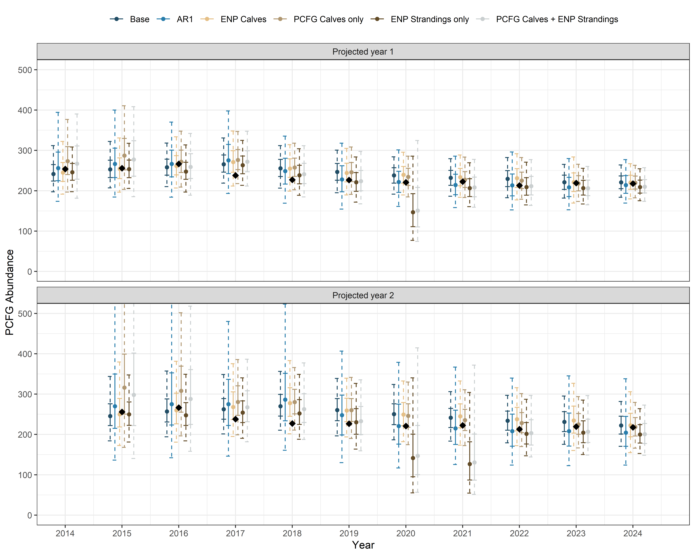
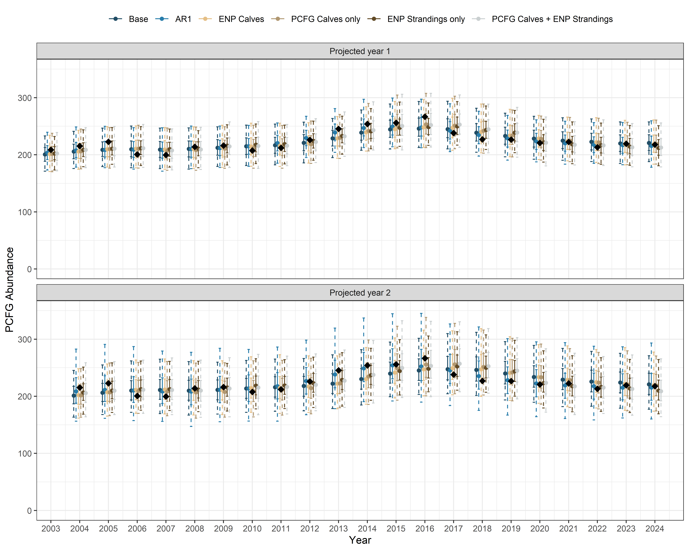
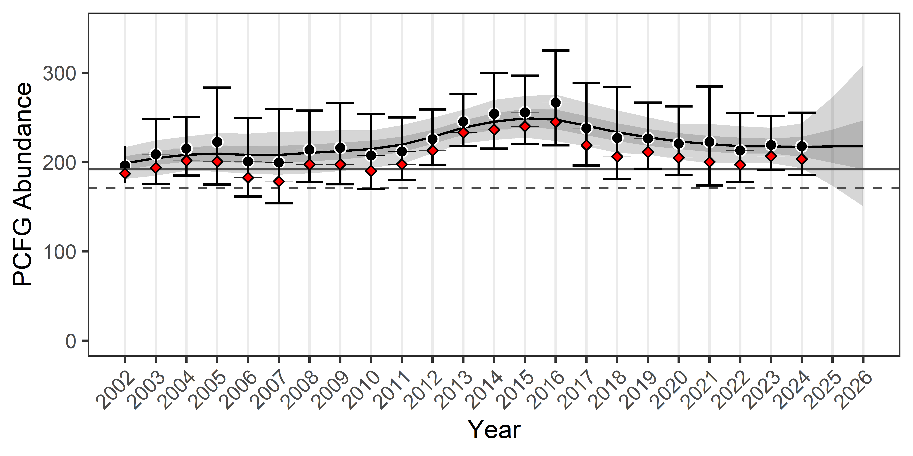
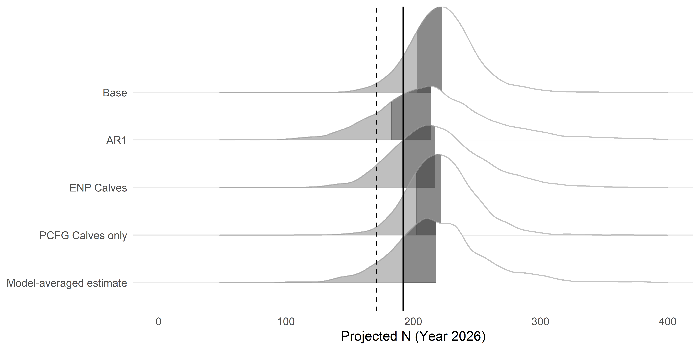

| Model | elpd_loo | elpd_loo_se | p_loo | p_loo_se | looic | looic_se | deltaLooic |
|---|---|---|---|---|---|---|---|
| AR1 | 28.26 | 0.82 | 2.14 | 0.50 | -56.52 | 1.64 | 0.00 |
| ENP Strandings only | 27.39 | 0.83 | 2.57 | 0.40 | -54.78 | 1.67 | 1.74 |
| Base | 27.38 | 0.78 | 2.57 | 0.39 | -54.77 | 1.57 | 1.75 |
| PCFG Calves only | 26.91 | 0.68 | 2.97 | 0.50 | -53.82 | 1.36 | 2.70 |
| PCFG Calves + ENP Strandings | 26.87 | 0.76 | 2.92 | 0.43 | -53.75 | 1.53 | 2.77 |
| ENP Calves | 26.73 | 0.75 | 3.06 | 0.58 | -53.45 | 1.50 | 3.07 |
A state-space model for projecting population abundance
Model results
Coefficient estimates
Table 1 provides \(\beta\) coefficient estimates for models where coefficients for \(\lambda\) were estimated. Lower CI and Upper CI correspond to the lower and upper 95% credible intervals. \(Rhat\) values less than 1.01 indicate effective mixing within and across chains, producing reliable and consistent estimates for the parameters. \(ESS\) is the effective sample size and is an indicator of chain sampling efficiency. Here, \(ESS\) values greater than 300 indicate sufficient sampling has been achieved.
| Model | Variable | Mean | Median | SD | Lower CI | Upper CI | Rhat | ESS_bulk |
|---|---|---|---|---|---|---|---|---|
| ENP Calves | \(\beta_{Calves}\) | 0.004 | 0.004 | 0.028 | -0.044 | 0.049 | 1.000 | 1819.5 |
| PCFG Calves only | \(\beta_{Calves}\) | 0.010 | 0.010 | 0.017 | -0.018 | 0.037 | 1.004 | 3383.9 |
| ENP Strandings only | \(\beta_{Strandings}\) | -0.001 | -0.001 | 0.001 | -0.003 | 0.001 | 1.002 | 2183.2 |
| PCFG Calves + ENP Strandings | \(\beta_{Calves}\) | 0.005 | 0.005 | 0.018 | -0.022 | 0.035 | 1.003 | 2569.8 |
| PCFG Calves + ENP Strandings | \(\beta_{Strandings}\) | -0.001 | -0.001 | 0.001 | -0.003 | 0.001 | 1.003 | 2349.0 |
Leave-one-out Cross Validation (LOO)
Table 2 provides estimates of model fit using an information criterion (leave-one-out information criterion; looic) based on leave-one-out cross validation (Vehtari et al. 2017). Models with the lowest \(looic\) value are considered the best fitting model given the time series of abundance data used to fit the model. \(\Delta looic\) represents the difference in \(looic\) relative to the model with the lowest \(looic\).
Predictive accuracy with retrospection
Given that prediction was the primary objective of this exercise, we evaluated the ability of each model to retrospectively predict a “future”, known population abundance using the PCFG abundance time series from (Mahoney et al. 2026). Predicting future states, or “forecasting”, is notoriously challenging particularly as we project further into the future. However, within this system, data gaps of one or two years represent the most plausible scenarios managers are likely to encounter, providing the basis for our evaluation. In addition, we anticipated relative performance within model sets was likely to vary as we projected further into the future. Thus, in order to document a potential shift in model support in relation to projection length, we evaluated predictive performance when projecting one and two years separately. Finally, we evaluated predictive performance using models fitted to both truncated and complete abundance time series. The latter provides the best available knowledge of the system for model fitting, but might bias retrospective evaluations of predictive performance due to information “spillover” from future observed population states. The former can become data limited and select for overly simplistic models as time series shorten.
All time series used in model fitting started with estimates from 2002, but varied in their end point. In the case of truncated times series, we fit each of the six specified models to multiple time series with varying end points from 2013 through 2022, providing projected abundance estimates for years 2014 through 2024. Notably, we evaluated endpoints between 2006 and 2012, but these shorter time series were inadequate for model convergence. In the case of the complete time series, we fit all six models to a single time series representing abundance data from 2002 through 2024. Model parameters were then used to retrospectively project abundance forward one or two years from 2002 through 2022, providing projected abundance estimates for years 2003 through 2024.
In all cases, projected estimates were then compared to “observed” abundance in the same year using residual sum of squares (RSS), the quantile for observed abundance, 60% and 95% credible intervals, and whether an estimate dropped below threshold resulting in a presumed hunt closure. Predictive fits were summarized by one or two year projection lengths.
Model fits derived from truncated time series
The following tables show predictive performance statistics by model specification when predicting one (Table 3) or two years forward (Table 4) from all data years between 2013 and 2022 using the truncated time series described above. Makah hunt closures will be imposed when N falls below 192 or Nmin falls below 171.
| Model | Mean RSS | Mean Percentile (N) | Median Percentile (N) | Mean Prop Below Threshold (N) | Median Prop Below Threshold (N) | Number of Closures (Nmin) | Number of Closures (N) | Number of Closures | Closure Years |
|---|---|---|---|---|---|---|---|---|---|
| AR1 | 259.9 | 0.464 | 0.487 | 0.133 | 0.157 | 0 | 0 | 0 | |
| Base | 276.4 | 0.366 | 0.337 | 0.030 | 0.020 | 0 | 0 | 0 | |
| ENP Calves | 303.5 | 0.361 | 0.335 | 0.044 | 0.028 | 0 | 0 | 0 | |
| PCFG Calves only | 475.9 | 0.313 | 0.307 | 0.043 | 0.028 | 0 | 0 | 0 | |
| ENP Strandings only | 536.0 | 0.596 | 0.634 | 0.178 | 0.138 | 1 | 1 | 1 | 2020 |
| PCFG Calves + ENP Strandings | 564.1 | 0.519 | 0.538 | 0.180 | 0.138 | 1 | 1 | 1 | 2020 |
| Model | Mean RSS | Mean Percentile (N) | Median Percentile (N) | Mean Prop Below Threshold (N) | Median Prop Below Threshold (N) | Number of Closures (Nmin) | Number of Closures (N) | Number of Closures | Closure Years |
|---|---|---|---|---|---|---|---|---|---|
| Base | 620.0 | 0.309 | 0.244 | 0.047 | 0.039 | 0 | 0 | 0 | |
| ENP Calves | 794.7 | 0.306 | 0.246 | 0.069 | 0.052 | 0 | 0 | 0 | |
| AR1 | 1069.8 | 0.450 | 0.471 | 0.227 | 0.232 | 2 | 0 | 2 | 2022,2024 |
| ENP Strandings only | 1323.1 | 0.606 | 0.655 | 0.298 | 0.235 | 2 | 2 | 2 | 2020,2021 |
| PCFG Calves only | 1561.7 | 0.265 | 0.246 | 0.068 | 0.057 | 0 | 0 | 0 | |
| PCFG Calves + ENP Strandings | 1626.3 | 0.522 | 0.527 | 0.298 | 0.234 | 2 | 2 | 2 | 2020,2021 |
Figure 1 depicts the predictive fits when abundance was projected forward one (top panel) or two years (bottom panel) for all model specifications in a truncated time series context. Observed abundance estimates for years 2014 through 2024 are represented as back diamonds, median model predictions are represented by points, 60% credible intervals are depicted as solid error bars, and the 95% credible intervals are depicted as dashed error bars.

Model fits derived from full time series
The following tables show predictive performance statistics by model specification when predicting one (Table 5) or two years forward (Table 6) for all data years from 2002 through 2022 using the full time series. As stated above, Makah hunt closures will be imposed when N falls below 192 or Nmin falls below 171.
| Model | Mean RSS | Mean Percentile (N) | Median Percentile (N) | Mean Prop Below Threshold (N) | Median Prop Below Threshold (N) | Number of Closures (Nmin) | Number of Closures (N) | Number of Closures | Closure Years |
|---|---|---|---|---|---|---|---|---|---|
| AR1 | 47.8 | 0.518 | 0.549 | 0.074 | 0.057 | 0 | 0 | 0 | |
| PCFG Calves only | 77.8 | 0.516 | 0.500 | 0.082 | 0.062 | 0 | 0 | 0 | |
| PCFG Calves + ENP Strandings | 78.2 | 0.518 | 0.587 | 0.080 | 0.084 | 0 | 0 | 0 | |
| ENP Strandings only | 86.4 | 0.513 | 0.566 | 0.059 | 0.059 | 0 | 0 | 0 | |
| ENP Calves | 90.4 | 0.520 | 0.490 | 0.074 | 0.057 | 0 | 0 | 0 | |
| Base | 90.7 | 0.522 | 0.466 | 0.070 | 0.046 | 0 | 0 | 0 |
| Model | Mean RSS | Mean Percentile (N) | Median Percentile (N) | Mean Prop Below Threshold (N) | Median Prop Below Threshold (N) | Number of Closures (Nmin) | Number of Closures (N) | Number of Closures | Closure Years |
|---|---|---|---|---|---|---|---|---|---|
| AR1 | 44.2 | 0.505 | 0.524 | 0.149 | 0.166 | 0 | 0 | 0 | |
| ENP Strandings only | 143.0 | 0.504 | 0.550 | 0.085 | 0.089 | 0 | 0 | 0 | |
| PCFG Calves + ENP Strandings | 144.5 | 0.509 | 0.583 | 0.116 | 0.146 | 0 | 0 | 0 | |
| PCFG Calves only | 162.7 | 0.506 | 0.480 | 0.122 | 0.107 | 0 | 0 | 0 | |
| ENP Calves | 180.9 | 0.505 | 0.456 | 0.107 | 0.107 | 0 | 0 | 0 | |
| Base | 182.2 | 0.507 | 0.432 | 0.100 | 0.081 | 0 | 0 | 0 |
Figure 2 depicts the predictive fits when abundance was projected forward one (top panel) or two years (bottom panel) for all model specifications. Observed abundance estimates for years 2003 through 2024 are represented as back diamonds, median model predictions are represented by points, 60% credible intervals are depicted as solid error bars, and the 95% credible intervals are depicted as dashed error bars .

Model-predicted population trends
Figure 3 depicts the predicted trends in PCFG gray whale abundance by state-space model specification during data years (2002 - 2024), as well as abundance projections for two years beyond (through 2026). The black points and red diamonds correspond to the mean PCFG abundance and Nmin, respectively, and were derived from a mark-resight population model published in (Harris et al. 2022). The solid error bars represent the 95% confidence intervals on mean estimates form the mark-resight model. The solid black trend line represents the state-space model predicted mean abundance. The lighter gray ribbon represents the 95% credible interval with the darker ribbon reflecting the 60% credible interval, with the lower bounds capturing estimated Nmin. The solid and dashed horizontal gray lines correspond to the management closure thresholds for N and Nmin, respectively.

Model-averaged population trend and predictions for 2026
| Model | PseudoBMA+ | N | Nmin |
|---|---|---|---|
| Base | 0.222 | 221.6 | 202.9 |
| AR1 | 0.529 | 214.4 | 182.3 |
| ENP Calves | 0.113 | 217.6 | 191.0 |
| PCFG Calves only | 0.136 | 221.4 | 201.7 |
| Model-averaged estimate | 218.0 | 192.2 |
Table 7 captures the estimated model weights, and therefore relative support for each, when averaging estimates into a single, unified prediction using pseudo-Bayesian model averaging with bootstrapping (Yao et al. 2018). Model weights favored the AR1 model, with the remaining 47.1% of the model weight divided among base, ENP calves, and PCFG calves models. After accounting for estimated model weights, model-average prediction for the trend in PCFG abundance is depicted in Figure 4.

Table 7 and Figure 5 provide predictions for the near-future state of the PCFG gray whale population. All estimates, including those from individual models, predict the PCFG population is above the management thresholds for both N and Nmin in 2026. Table 7 provides the point estimates for N and Nmin, and Figure 5 depicts the posterior predictions by model. For the figure, the portion of the posterior distributions filled in light gray capture the lower 20% credible interval, the upper threshold of which represents the estimated Nmin. If this threshold drops below the dashed line, it would trigger a management closure.

References
Harris, J., J. Calambokidis, A. Perez, and P. J. Mahoney. 2022. Recent Trends in the Abundance of Seasonal Gray Whales (Eschrichtius Robustus) in the Pacific Northwest, 1996-2020. https://media.fisheries.noaa.gov/2022-09/harris-et-al-2022.pdf.
Mahoney, P. J., J. Harris, J. Calambokidis, and A. Perez. 2026. “Recent Trends in the Abundance of Seasonal Gray Whales (Eschrichtius Robustus) in the Pacific Northwest, 1996-2024.” NOAA AFSC Processed Rep. 2026-08: 1–18.
Vehtari, A., A. Gelman, and J. Gabry. 2017. “Practical Bayesian Model Evaluation Using Leave-One-Out Cross-Validation and WAIC.” Statistics and Computing 27: 1413–32.
Yao, U., A. Vehtari, D. Simpson, and A. Gelman. 2018. “Using Stacking to Average Bayesian Predictive Distributions.” Bayesian Analysis 13 (3): 917–1007.